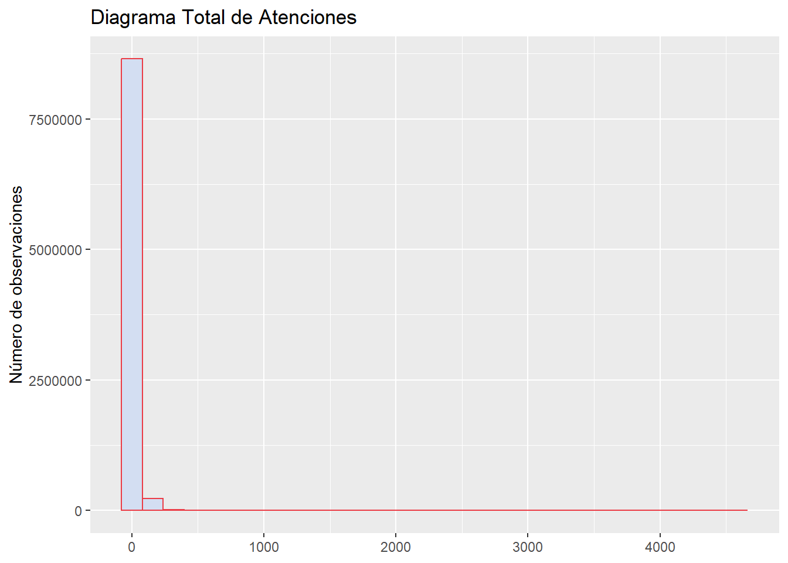

Capitulo 4 Analisis Descriptivo
En este capítulo se definen las variables categóricas y cualitativas que serán analizadas, se visualizan los datos en tablas de frecuencia y gráficamente. La variable categórica considerada para el análisis son las regiones de Chile y la variable cualitativa es el total de atenciones
## [1] "Librerias Cargadas"4.1 Tabla de frecuencias por región
#AtenUrgencia$NombreRegion=factor(AtenUrgencia$NombreRegion)
tablaRegion <- table(AtenUrgencia$NombreRegion, exclude=c(NA))
tablaRegion##
## De Aisén del Gral. C. Ibáñez del Campo De Antofagasta
## 84320 300600
## De Arica y Parinacota De Atacama
## 58400 218960
## De Coquimbo De La Araucanía
## 364760 587960
## De Los Lagos De Los Ríos
## 596160 371640
## De Magallanes y de La Antártica Chilena De Ñuble
## 130320 402760
## De Tarapacá De Valparaíso
## 264480 911680
## Del Bíobío Del Libertador B. O'Higgins
## 971400 627280
## Del Maule Metropolitana de Santiago
## 859840 2148520## Var1 Freq
## 1 De Aisén del Gral. C. Ibáñez del Campo 84320
## 2 De Antofagasta 300600
## 3 De Arica y Parinacota 58400
## 4 De Atacama 218960
## 5 De Coquimbo 364760
## 6 De La Araucanía 587960
## 7 De Los Lagos 596160
## 8 De Los Ríos 371640
## 9 De Magallanes y de La Antártica Chilena 130320
## 10 De Ñuble 402760
## 11 De Tarapacá 264480
## 12 De Valparaíso 911680
## 13 Del Bíobío 971400
## 14 Del Libertador B. O'Higgins 627280
## 15 Del Maule 859840
## 16 Metropolitana de Santiago 2148520knitr::kable(
head(dataframeRegion, 10), caption = 'tabla2 - Frecuencia por Region',
booktabs = TRUE
)| Var1 | Freq |
|---|---|
| De Aisén del Gral. C. Ibáñez del Campo | 84320 |
| De Antofagasta | 300600 |
| De Arica y Parinacota | 58400 |
| De Atacama | 218960 |
| De Coquimbo | 364760 |
| De La Araucanía | 587960 |
| De Los Lagos | 596160 |
| De Los Ríos | 371640 |
| De Magallanes y de La Antártica Chilena | 130320 |
| De Ñuble | 402760 |
4.3 Tabla de frecuencia por total de atenciones
tablaTotal <- table(AtenUrgencia$Total, exclude=c(NA))
dataframeTotal=data.frame(tablaTotal)
knitr::kable(
head(dataframeTotal, 10), caption = 'tabla2 - Frecuencia de Atenciones',
booktabs = TRUE
)| Var1 | Freq |
|---|---|
| 0 | 5966474 |
| 1 | 700986 |
| 2 | 352215 |
| 3 | 213879 |
| 4 | 146220 |
| 5 | 109055 |
| 6 | 86004 |
| 7 | 70665 |
| 8 | 59936 |
| 9 | 52105 |
4.4 Gráfico de frecuencia por total de atenciones
ggplot(AtenUrgencia, aes(x=Total)) +
geom_histogram(color="#eb3c46", fill="#d3def2")+
labs(x = NULL, y = "Número de observaciones",title = "Diagrama Total de Atenciones") ## `stat_bin()` using `bins = 30`. Pick better value with `binwidth`.